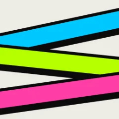
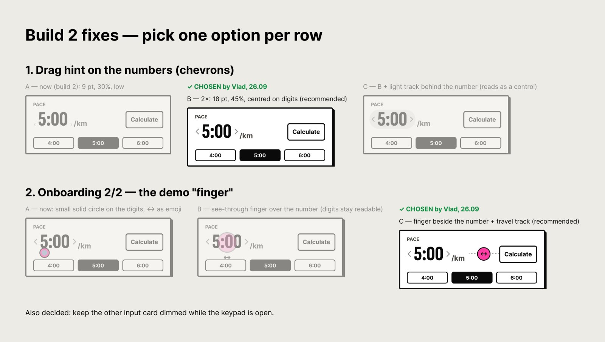
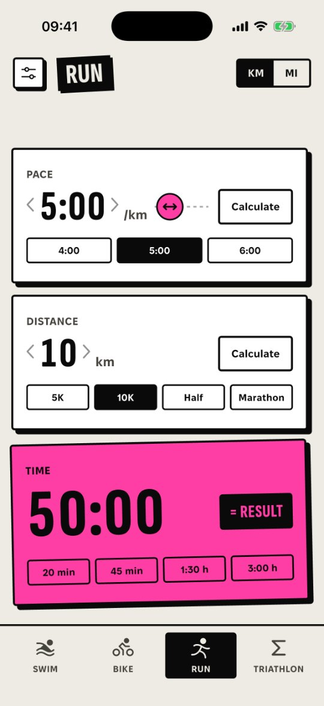
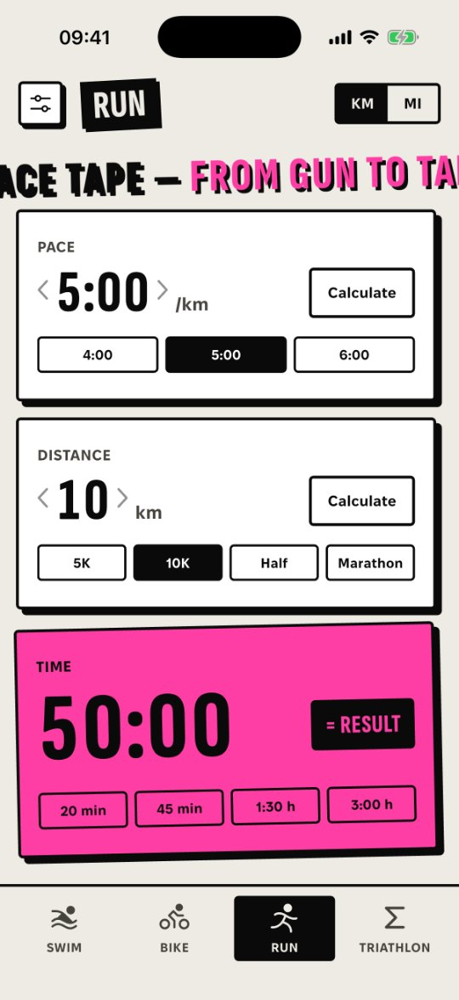
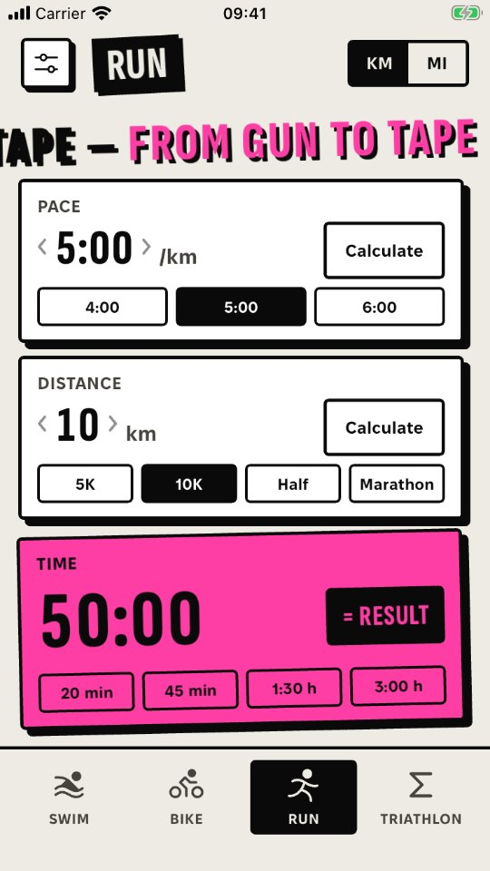
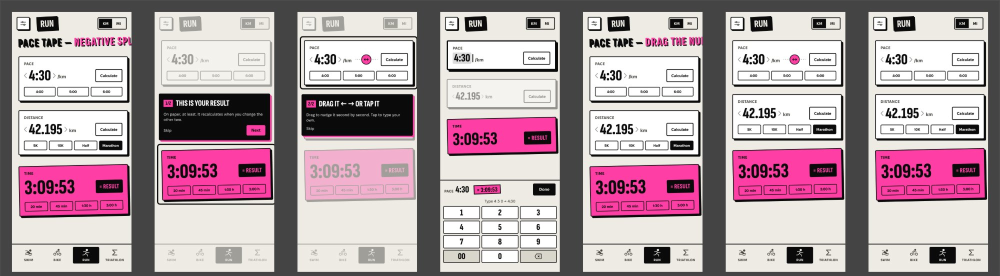
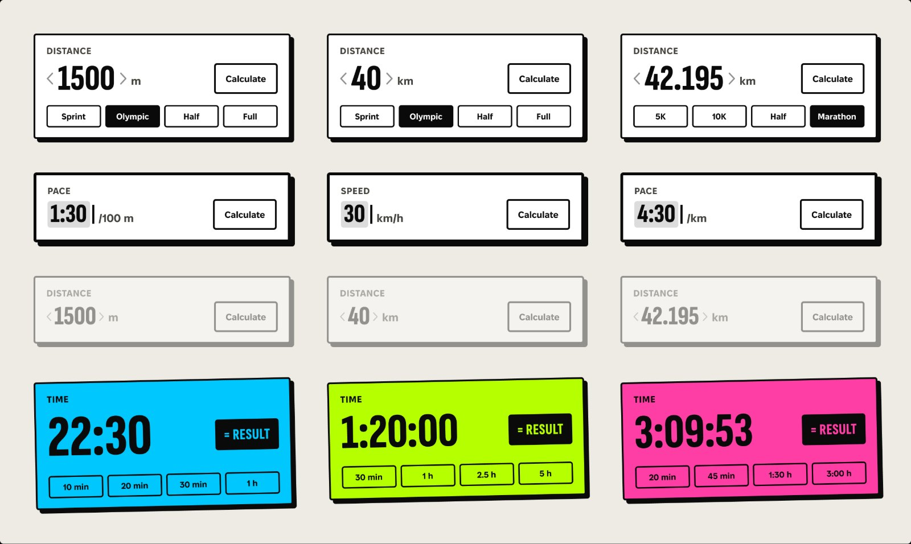

Pace Tape
Pace, speed and time calculator for swim, bike, run and triathlon. Set any two numbers — the third is calculated.
A number you need at the start line shouldn’t take a minute.
Many pace apps are cluttered, carry ads, or don’t make clear which number is being calculated.
Three sports plus T1 and T2 transitions — added into one finish time, not three separate tools.
Typing a question and reading a paragraph is slower than a screen that answers as you change a value.
A and C are my framing of the problem. Section 02 shows what the competitor pages and 6 interviews support.
Six apps on the App Store, six conversations.
A · Competitor analysis
| APP | PRICE / ADS | SPORTS | TRIATHLON TOTAL | INPUT | DATA (APP PRIVACY) | LANGUAGES |
|---|---|---|---|---|---|---|
| Pace Calculator Polymorph Solutions | Free · contains ads · Remove Ads €1.99 | Run | — | Fields + chat assistant | Used to track you (location, identifiers, usage) | EN, FR |
| Paces Austin Louden | Free · no ads, no in-app purchases | Run | — | ±1 min buttons, distance picker | Not collected | EN |
| Pace: Running Pace Calculator Skipjack Studios | Free · contains ads · Remove Ads €5.99 | Run | — | Sliders; Apple Watch | Used to track you (identifiers, usage) | EN |
| PaceAce CyberWisp | Free · no ads, no in-app purchases | Run (splits) | — | Number keyboard; Apple Watch | Not collected | EN |
| TriCalc Robert Rusch | Free · lifetime unlock €1.99 · no ads | Swim, bike, run | Yes, with transitions | Split fields | Not collected | EN |
| RunTriX Markus Malz | Free · Pro €9.99 or €19.99 | Run, bike, triathlon | Triathlon calculator | Calculators + Apple Health | Not collected | EN |
| Pace Tape | Free · no ads · no login | Swim, bike, run | Yes — Σ with T1 + T2 | Stopwatch keypad + drag to scrub | Not collected · works offline | EN, UK |
Source: App Store product pages, IE storefront, checked 25.09.2026. — = not offered.
2 of 6 show ads and track users. None offers Ukrainian. Pace Tape: free, no ads, no data collected, EN + UK.
B · User interviews
Most participants said they would use a pace calculator app if it were light and easy to use.
2 of 6 said they don’t like the design of competitor apps.
- I’d use one if it’s light and easy.
- Constant ads get in the way.
- Too many features I don’t need.
- The interface is too complicated.
- I don’t like how these apps look. (2 of 6)
C · SWOT
- Answers what users asked for: light, no ads, simple
- Swim, bike, run and a triathlon total with T1/T2 in one free app
- Offline, no data collected, EN + UK
- Small sample (6 interviews)
- iPhone only; no Apple Watch, unlike several running apps
- No splits or saved plans yet
- People are tired of ads and bloated apps
- Planning features (target time, splits, Pace Band) as a Pro tier
- Competitors can drop ads
- AI chat can also calculate pace
Every complaint became a rule.
Eight user stories, one screen each.
Has a target time and needs the pace for it — or the finish for a pace — in seconds, on the phone, often with no signal.
Thinks in three paces plus two transitions and wants one finish time that updates when any part changes.
Ship the calculator. Park the planner.
- Engine: pace / distance / time
- Swim, bike, run screens
- Σ triathlon with T1, T2
- Stopwatch keypad
- km/mi · m/yd
- Drag to scrub
- EN + UK, light/dark
- VoiceOver, Reduce Motion
- Onboarding — 2 steps (3 in build 1)
- Target-time planning
- Saved plans
- Per-km splits
- Pace Band (printable / lock screen)
- Home screen widget
- Android
- Apple Watch (idea)
- Accounts, sync, ads
Seven calls, and what I said no to.
Try the toggles and sliders. “Illustration” = a recreation, not a real earlier build.
One codebase for iOS and Android — Android comes next from the same code. The custom animations and the keypad are the product: hard shadows, tilts, drag-to-scrub, the ticker, the stopwatch keypad. Flutter draws every pixel, so none of this fights native controls.
Native SwiftUI — iOS only, a second app for Android.
Stand out among grey, look-alike calculators; 2 of 6 interviewees disliked competitors’ design. Chosen after the interviews and reference research.
A standard grey form calculator.
Each sport has its own colour, so you know the screen at a glance. Bright like sports gear, maximum contrast on paper and ink — a variation of the colours used to mark triathlon legs. The accent appears only on the result.
One brand colour everywhere, and accent on every state.
A printed-paper feel; clear edges readable at a glance.
Soft blurred shadows.
Tabular figures, so numbers don’t jump while you drag them. Fixel is a Ukrainian typeface by MacPaw with proper Cyrillic for the UK version. Both are open-licensed (OFL).
Proportional digits that jitter while scrubbing.
A joke about the sport eases pre-race nerves; jokes are about the sport, never the person. Can be switched off; hidden with Reduce Motion.
An endless loop: TEMPO / SWIM / BIKE / RUN. Literal translation into Ukrainian.
The keypad covered the bottom card and every card looked the same. Now the edited card stays above the keypad with a heavier ink outline, the other input dims, and the keypad bar shows the value and the live result.
The first build: keypad over the cards, no edit state.
Test → fix → ship: one day, three builds.
Build 1 was already waiting for App Review when I tested it on my iPhone (a 2:38 screen recording) and collected feedback from other testers. I pulled it from review.
Build 1 → after
Build 1 = frames from my screen recording. After = screenshots of builds 2–4.
The calls I made in this round
Rejected options stay visible. Chosen = pink.
A was invisible; C adds noise to every card.
Digits stay readable, and that space is part of the drag area.

If someone has never dragged and doesn’t touch the screen for 8 s, the finger slides once. No dim, no text.

“Tip / Порада” took space and set the wrong tone.
- The band arrives with the screen — no drop.
- One 300 ms glide.
- Never under a finger.
- No band during onboarding.
On iPhone SE the slot stays permanent: there the moving band pushed the result under the tab bar.


- The number is edited in place — no extra ~200 pt control.
- Vertical drags on a stack of cards read as scrolling, and the screen edges belong to the system.
- Left = less, right = more — like sliders and scrubby number fields in Figma.
- Comfortable one-handed.
The problem was discoverability, not direction — hence a–c. Next test: ask people to change the pace and watch which way they drag.
Final screens in Figma, before code

Launch
One set of tokens — in Figma and in code.
Widgetbook is the Flutter version of Storybook. Every state is visible without clicking through the app, and every UI change updates its Widgetbook story in the same commit.
Design side: a Figma library generated from the same tokens as the code — colour variables for light and dark, sizes, shadow and text styles. Code side: Widgetbook. Same values, same names.
Colours light/dark, type, hard shadows, tilts.
HardBox, Pressable, Sticker, OutlineButton, InkButton, chips, icons.
Card, keypad, header, tab bar, ticker, toast, coach tips, settings, race total, launch intro.
Rule: accent = result only
The number you’re typing gets an ink outline and a caret. Only the calculated number gets the sport colour.

Run, swim, bike, Σ — and a keypad that tells you what it’s typing.
App Store screenshot frames — matched to the real app before release.
I designed and directed. Claude Code wrote the code.
The code was written by Claude Code under my direction. Product, design and every decision below were mine. From the first sketches to the App Store release took about three weeks.
First visual sketches and the logo in Illustrator (the three tapes, the paper-and-ink look), first prototypes in Figma.
Claude Design prototype and UI kit (EN + UK), README spec, tri-core engine.
Engine ported 1:1 from the prototype’s tri-core, design system, sport screen, keypad.
Settings, Σ triathlon, ticker, onboarding, accessibility, Widgetbook component catalog.
Privacy page, store screenshots, 1.0 with build 1 submitted. Release kept manual.
Tokens and components generated from the code, with a parity check. From here on, every change is designed in Figma first.
Tested on my iPhone (screen recording) and collected testers’ feedback. Build 1 pulled from review.
Options in Figma, my pick, final screens; builds 2, 3 and 4; 1.0 with build 4 resubmitted.
Section 07 ↑Waiting for App Review, then approved.
Every change: options in Figma → my pick → staged prompt → tests → one commit → my review on the phone.
Key decisions that shaped the product
A selection of 10 — not the full list.
Live on the App Store.
Version 1.0 (build 4) · released 1 October 2026 · available in 173 countries · no ads, no account, no data collected.
It has only just gone live — download it and rate it.
Get it on the App Store ↗Build 1 was already in review when my iPhone showed 7 bugs.
The test showed a discoverability problem, not a direction problem — so I made the drag visible instead of replacing it.
Since 25 Sept every change starts as options in Figma and ends with screenshots checked against it.
Version 1.0.1 is already in the backlog.
Release is where real feedback starts. I collect it in one backlog and ship it as one update, so the app doesn’t sit in the review queue for every small fix.
After installing from the App Store over the TestFlight build, my phone no longer counted as a first launch, so I only saw the 1.2 s flash and the slogan got cut off.
Next version: the slogan runs in full on every cold start, a tap skips it.
I shared the app in running communities.
Their feedback goes straight into the backlog, word for word.
First the App Store page in German, Spanish, French and Polish, then the app itself.
Ticker jokes are written from scratch for each language, not translated. The order follows where downloads actually come from.
Same Flutter code.
It ships if people ask for it.
The TestFlight round showed a discoverability problem, not a direction problem.
Next test: ask people to change the pace and watch which way they drag.
Lesson: test the App Store install path too, not only TestFlight.